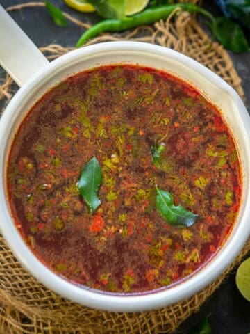

Beetroot Rasam

Description
Beetroot Rasam (Beetroot Saaru) is a variation of the classic tomato rasam made by adding beetroot puree to the traditional recipe.
It is tangy, spicy, and loaded with warm flavors.
This recipe is super easy to make and comes together in under 30 minutes using a few simple ingredients.
Ingredients
- Beetroot
- Tarmarubd Pulp
- Cilantro
- Garlic Cloves
- Coriander Seeds
- Tomatoes
- Red Chilles
- Cumin Seeds
- Curry leaves
- Black Pepper Corn
- Salt
How to make Beetroot Rasam
- Dry roast peppercorns, cumin seeds, dry red chilies, and coriander seeds over medium heat until slightly browned and fragrant (3-4 minutes).
- Remove the pan from the heat and transfer the roasted ingredients to a mortar and pestle.
- Crush to make a coarse rasam powder.
- Heat 1 cup water in a pan over medium heat.
- Add beetroot and tomatoes to the pan and cook for 10 minutes.
- Remove the pan from the heat and let the ingredients cool down to room temperature.
- Transfer the cooked beetroot and tomatoes along with the water to a blender and blend to make a coarse puree.
- Add the puree, tamarind pulp, garlic, and curry leaves to a pan.
- Add 2 cups of water and stir well.
- Cook the rasam on medium-low heat for 10-12 minutes.
- Now add the rasam powder that we made earlier and salt and cook until rasam comes to a gentle boil.
- Add cilantro and mix well.
- Heat ghee or oil in a small pan over medium-high heat.
- Once the ghee is hot, add mustard seeds, asafetida, and dry red chili and let them crackle for 4-5 seconds.
- Pour the tempering over the rasam and mix well.
- Check for salt and add more if needed. Serve hot.